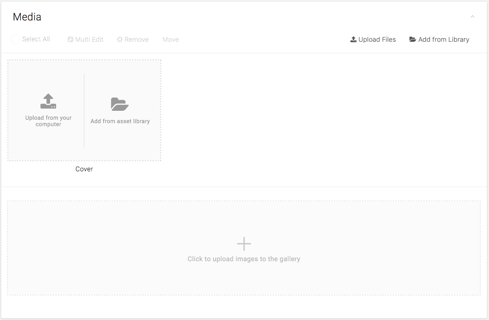

An actionable empty state displays an interactive icon and a text tagline.
Use actionable empty state when:
- Only one action is needed to fill the content
- The action involves showing pop-up, overlay, or new tab/window
Do NOT use actionable empty state when:
- There are multiple possible actions that can be performed to fill the content
- The original action requires interaction with other than buttons (e.g. search bar)
- The action redirects the user to the different section in the same page
Use an Icon that Conveys the purpose of the action
- There are multiple possible actions that can be performed to fill the content
- The original action requires interaction with other than buttons (e.g. search bar)
- The action redirects the user to the different section in the same page
Include a tagline that:
- has a positive tone
- Is consistent with the CMS brand
- Directly conveys the purpose of the action using active verb and imperative sentence.

Media Card on Gallery page